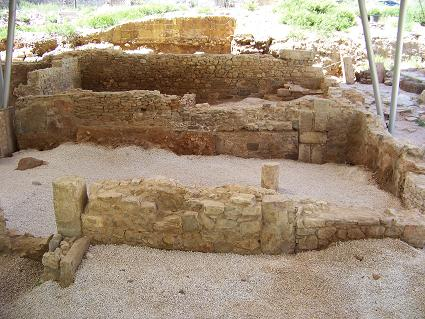
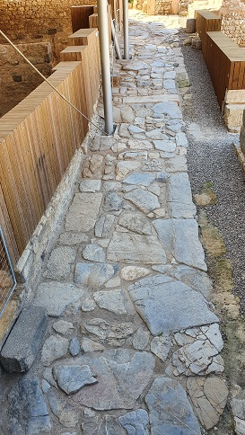
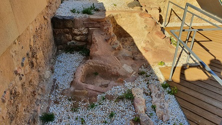
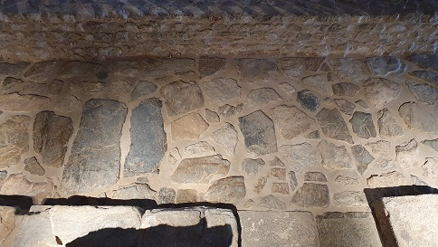
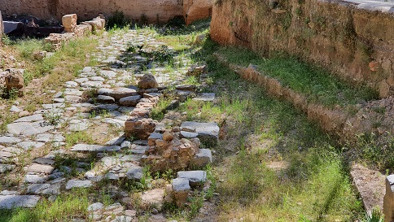
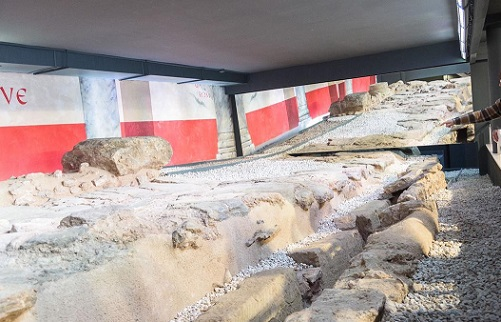
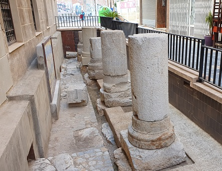
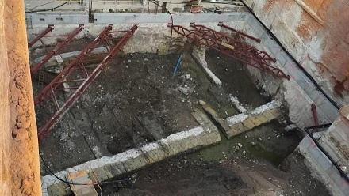

|
C.I. MURALLA PÚNICA El Centro de Interpretación de la
Muralla Púnica está situado en la ladera sur de una de las 5 colinas que
rodeaban la ciudad de Qart Hadast, en el Monte de San José, llamado en
la antigüedad Aletes. En la actual calle San Diego, 25.
AGUSTEUM
Los restos romanos del Agusteum se
localizan en la calle Caballero. Es un edificio de carácter religioso,
identificado como la sede del Colegio Augustal en la ciudad, donde se
reunían los sacerdotes encargados del culto al imperial. Su construcción
se ha datado en el siglo I.
MUSEO FORO ROMANO MOLINETE Este monte era conocido como Arx Hasdrubalis por
encontrarse en él, según Polibio, el palacio o fortaleza del general
carthagines Asdrúbal. Tras las excavaciones sus restos se interpretarían
como un recinto sacro de planta rectangular con una orientación
norte-sur cuyos muros se alzan sobre una plataforma construida con
sillares de arenisca que servían para nivelar el terreno. Encima de ésta
se levantaban los muros del podium. Se trataría de un templo tetrástilo
datado a finales del siglo II a.e.c. y principios del I. Junto a él se
hallan los restos de otro conjunto sacro formado por un edículo de
reducidas dimensiones y una sala con piscina. En el interior del edículo
se halló un pavimento con inscripción que recoge la dedicatoria del
templo a la diosa siria Atargatis. El conjunto se completa al norte con
una serie de construcciones hidráulicas parcialmente destruidas por la
muralla, puede ser datado en el mismo periodo que el santuario mayor
aunque se sabe con certeza que se erigió unos pocos años antes que
aquél.
El Barrio del Foro Romano amplía el
conocimiento de la antigua Carthago Nova. Las excavaciones de 2008 y 2009
en la ladera sur del Molinete, permitieron sacar a la luz una manzana
completa de la Cartagena romana. Inaugurado en 2012. Ver video
El edificio del atrio estaba destinado
a celebrar banquetes de carácter religioso, de dos plantas, datado a
finales del siglo I a.e.c. Se cree que estaba consagrado a dioses
orientales, quizás Isis o Serapis. Estaba organizado en torno a un
patio o atrio con cuatro columnas desde el cual se accedía a las
cuatro salas para los banquetes, triclinia. Tabernas y estancias de
servicio completaban el conjunto.
 En la Casa con almacén, se situó una casa con cocina, un área de trabajo y un pequeño almacén donde se recuperaron 16 ánforas de vino, aceite y salazones de los siglos III-IV. Aparecieron quemadas y aplastadas, permitiendo datar el colapso del edificio en el siglo IV. El Kardo franquea el edificio del Atrio y el templo de Isis. Data de mediados del siglo I a.e.c. Por debajo discurría la cloaca. Comunicaba los edificios de la ladera y el cerro con el Teatro.
 En agosto de 2017, en el Museo del Foro Romano se incluye la visita al Templo de Isis, un sector de 750 metros cuadrados en el que destaca una parte central elevada un metro y medio, con imponentes columnas entre las que estaba su estatua, y tres capillas detrás. El templo data de mediados del siglo I y se mantuvo en uso hasta el siglo III. El templo guarda similitudes con otros templos del Mediterráneo, como el de Pompeya y el de Ostia en la península Itálica o el de Sabratha en África. En el subsuelo se han localizado cuatro cisternas para recoger el agua de lluvia usada en lo rituales de purificación.
El Taller de Vidrio data del siglo III, cuando el santuario se abandonó y una de las habitaciones traseras se reutilizó como taller de hierro y vidrio. Se han conservado dos hornos para los diferentes procesos en la elaboración del vidrio. Soplado y templado.

En el yacimiento del Foro, después de la visita a las salas del museo, bajamos a la calle pavimentada y a la Curia. Inaugurada en abril 2021.

La Curia se inaugura en abril de 2021. Destaca su pavimento ricamente decorado con mármoles. Una de las mejor conservadas de España. La Curia Ordinis, era la sede del senado local. Estaba formada por dos espacios, un patio y el aula. Data de época de Tiberio. Se construyó sobre una Curia anterior.
Salimos de la Curia y nos encontramos con los edificios del Foro y el edificio del Mosaico. En la esquina noroccidental del foro sobre un edificio anterior del siglo I. Data del siglo III, y se relaciona con la administración de la ciudad.
CASA DE LA FORTUNA En la Casa de la Fortuna podemos disfrutar de
los restos de una calzada romana, kardo, a cuyos lados hay restos de dos
viviendas del siglo I a.e.c. La casa nos ofrece una panorámica de la
vida romana en la ciudad. De la domus, se conservan el tabularium, los
cabicula, el triclinium, el atrio.... La casa ocupa una extensión de 204
m2. Los paneles pictóricos destacan por su gran cromatismo y belleza. Entre los mosaicos podemos encontrar vestigios de múltiples motivos ornamentales; rombos, estrellas y esvásticas hasta motivos simbólicos que emblematizan elementos de la naturaleza y de la mitología.
DECUMANO En la Plaza de los Tres Reyes se pueden visitar y disfrutar de los restos de una de las principales calles de la ciudad romana, descubiertos durante unas excavaciones en 1968. Se trata de un tramo de calzada que discurre en dirección este-oeste, uniendo la zona portuaria con el foro, el denominado Decumano Máximo. La construcción del Decumano Máximo se ha datado en el siglo I, pero buena parte del enlosado, junto con los restos de las termas y porticado, son de una reforma posterior en torno a los siglos IV-V como fruto de una renovación tardía.
También es posible con la visitar apreciar los restos de
la estructura de las termas, sus diferentes salas y parte de los edificios que
franqueaban el decumano y su entorno circundante. Las Termas se extienden por
los subterráneos de calles circundantes y en el "Barrio del Foro Romano". Se han
conservado restos de el caldarium, el praefurnium, una habitación pavimentada en
mármol rosa, tres hipocaustum y el frigidarium. Ver Termas romanas
TEATRO ROMANO La construcción del edificio se ha datado
en los últimos años del siglo I a.e.c. No había ninguna referencia a su
existencia fue un descubrimiento totalmente inesperado. Esta situado en la
ladera occidental del cerro de la Concepción, la colina más elevada. Gran parte
se asienta sobre la roca recortada del monte, recubierto posteriormente con
losas de caliza gris.
También se han hallado inscripciones
dedicadas a Lucio y Gaio Caesar, nietos de Augusto. Ver Teatros romanos
CATEDRAL ANTIGUA
CASA SALVIUS . La casa de Salvius, datada en el siglo I, es la típica domus itálica. Se halla en el sótano de un edificio en la calle del Alto de Cartagena, en el Residencial Puerta Nueva de Cartagena. Vivienda de grandes dimensiones: unos 1.400 metros cuadrados. Se articula en forma de “U” en torno a un peristilo o jardín, alrededor del cual se distribuyen las habitaciones. En una de ellas se localizó un magnífico mosaico con la inscripción Salvius que ha dado nombre a la casa. Destacan sus mosaicos que adornaban los suelos, casi todos ellos realizados con teselas blancas y negras componiendo complejos motivos geométricos. Las paredes de la vivienda estaban decoradas con frescos. Fotos: www.regmurcia.com y www.laverdad.es
CARDO DE SALVIUS- CALZADA ROMANA DEL BARRIO UNIVERSITARIO Las excavaciones llevadas a cabo en el barrio universitario han sacado a la luz unos 60m de calzada con dirección norte-sur (cardo) correspondiente al trazado del siglo I. Se supone que discurría desde el cerro de la concepción hacia el decumano máximo, seria utilizada para acudir al anfiteatro. En sus lados conserva los margines (aceras). A finales del siglo I, una de las vivienda adyacente invadió la acera en su parte más oriental. La calzada esta envuelta por viviendas particulares entre las que destaca el vano de acceso con dos pies orientados hacia el interior, planta pedum, símbolo de purificación y protección que se colocaba en la puerta de acceso a a la casa. En la mitad de la calzada se conserva la estructura de un posible templo dedicado a la protección de los caminos. El Cardo de Salvius es un trozo de calzada romana del siglo I a.e.c. que desemboca en la domus de Salvio, su acaudalado propietario.
LAS EXCAVACIONES ARQUEOLÓGICAS DE LA PLAZA DE LA MERCED Hallan en la Plaza de la Merced, junto a la calzada del barrio universitario, el decumano máximo por el que se accedía a la ciudad y que conducía al foro, datado en el siglo I a.e.c. y una casa púnica destruida en la invasión romana. En el interior de la casa púnica se han descubierto ánforas y vajillas de lujo. También ha sido encontrado un posible ninfeo de carácter monumental del siglo I a.e.c. Se excavó en 2015.

En febrero de 2023, la calzada por la que Escipión entró a Cartagena será
visitable a partir de marzo de 2023.

DOMUS DEL PÓRTICO - MURALLA BIZANTINA El yacimiento conocido como Muralla Bizantina fue excavado en 1983, por los restos hallados se pensó que era de época bizantina. Los restos conservados se componen de un lienzo recto y un torreón semicircular realizados en bloques de arenisca. Tras este muro exterior, otras dos líneas de cimentación paralelas a él realizadas con opus caementicium.
Se trataría de los restos del pórtico que enmarcaría el jardín por el que se produciría el acceso al teatro y que, en la segunda mitad del siglo VI., durante la denominación bizantina, fue aprovechado como muralla que protegería la ciudadela. Bajo estas cimentaciones del pórtico se conservan los restos de una vivienda del siglo I a.e.c. de la que se conservan dos grandes estancias con pavimentos decorados por hileras de crucetas y un rectángulo central con cuatro delfines insertos una composición geométrica de cuadrados inscritos y rombos enriquecida con incrustaciones de piedras nobles de colores muy variados.
COLUMNATA ROMANA La columnata de la morería baja se descubrió de forma casual al realizar unas obras de alcantarillado. Se recuperaron ocho macizos de cimentación, con cuatro basas de columnas, alineadas en dirección norte-sur y que pertenecerían al pórtico de una gran edificación romana ubicada, probablemente, frente a la costa, que en aquella época se situaba en la línea que forman la calle Mayor y la Puerta de Murcia. El aspecto actual se debe a una restitución.

ANFITEATRO ROMANO En la actualidad los restos del anfiteatro que
pueden ser vistos son los existentes en los sectores sur-este y
sur-oeste.
Se trataría de una construcción que tendría una
capacidad entre 10.000 y 11.000 espectadores. Se ha datado sobre el año 70.
EL PUERTO
El puerto romano se ha hallado en la calle Mayor de
Cartagena, en el foso de cimentación de la Casa Llagostera. Data del siglo I
a.e.c. A unos 3 metros de profundidad por debajo del nivel freático actual y en
buen estado de conservación. Los restos hallados del muelle tienen una
estructura formada por dos muros paralelos, realizados con sillares de arenisca
y rematado en superficie por una losa de caliza, ligados entre sí por tirantes a
intervalos regulares.

TORRE CIEGA
CALZADA ROMANA La calzada romana de Portmán - Atamaría, se localiza en el parque de Calblanque. Se conservan unos 2.700m de la calzada original.
LAS CANTERAS Las canteras romanas de Canteras, en Cabezo Gordo.
ARQUA Museo Nacional de Arqueología Subacuatica.
MUSEO MUNICIPAL
|